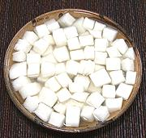

|
Radish Cube KimcheeKorea - Paek Kkatugi | ||||
| Makes: Effort: Sched: DoAhead: |
2-1/2 # ** 1+ hrs Best |
This winter kimchee is very easy to make, and popular enough our local Korean markets usually have it in the refrigerated cases. It can be served immediately with a dash of vinegar, or fermented 3 to 4 days. Makes 2-1/2 pounds, drained weight 1-1/2 pounds. | |||
|
2 1-1/2 1 4 1/3 1-1/4 |
# oz T cl in c |
Daikon (1) Sea Salt (2) Sugar Garlic Ginger Water |
Make - (45 min - 20 min work + Fermenting)
|